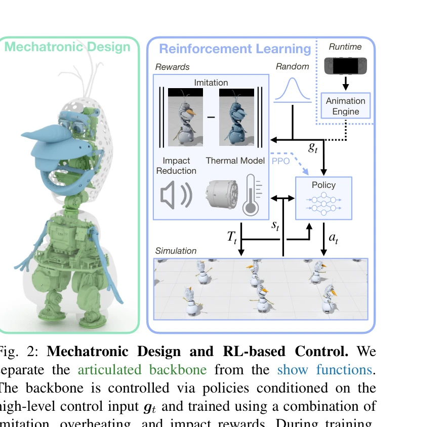

Essence

Fig. 1: Olaf Robot.
애니메이션 캐릭터 올라프를 실제 물리 로봇으로 구현하기 위해 RL 기반 제어와 혁신적인 기계설계를 결합한 연구이다. 비물리적 움직임과 부자연스러운 비율을 가진 캐릭터를 believable하게 현실화했다.
저자: David Müller, Espen Knoop, Dario Mylonopoulos, Agon Serifi, Michael A. Hopkins, Ruben Grandia, Moritz Bächer | 날짜: 2025-12-18 | URL: https://arxiv.org/abs/2512.16705
Fig. 1: Olaf Robot.
애니메이션 캐릭터 올라프를 실제 물리 로봇으로 구현하기 위해 RL 기반 제어와 혁신적인 기계설계를 결합한 연구이다. 비물리적 움직임과 부자연스러운 비율을 가진 캐릭터를 believable하게 현실화했다.

Fig. 2: Mechatronic Design and RL-based Control. We
Fig. 2: Mechatronic Design and RL-based Control. We
총평: 애니메이션 캐릭터를 물리 로봇으로 현실화하는 문제에 대해 기계설계와 제어 알고리즘을 창의적으로 결합한 우수한 연구이며, thermal awareness와 impact reduction 같은 실무적 고려사항을 RL에 반영한 점이 특히 주목할 만하다.